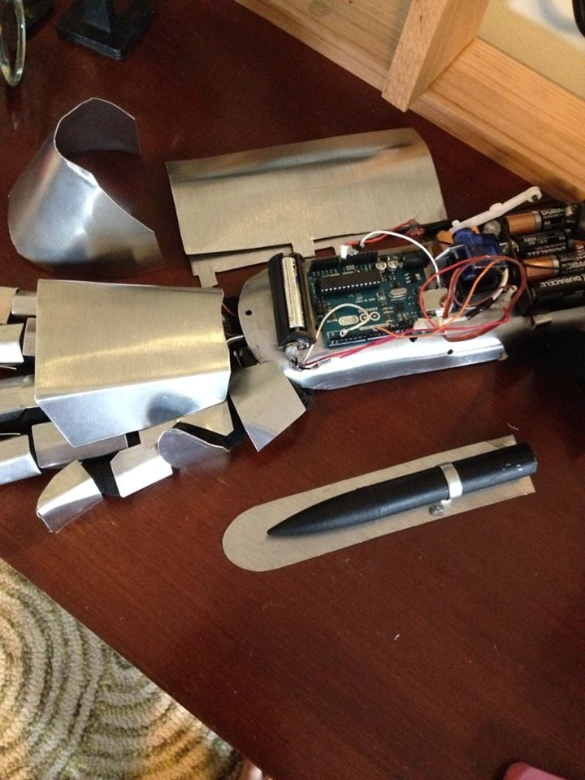
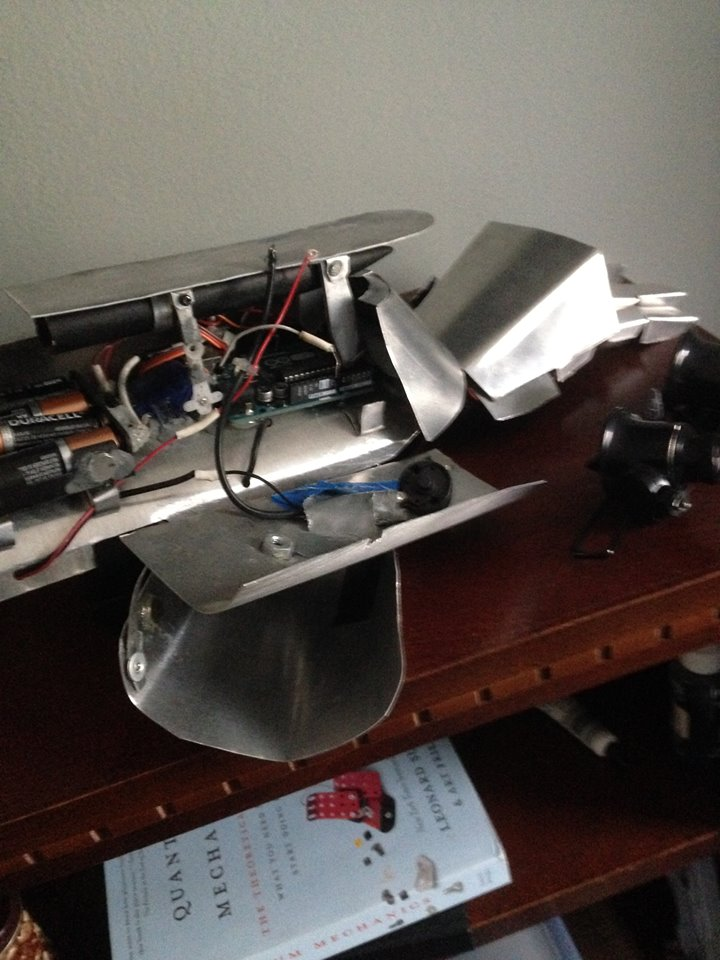
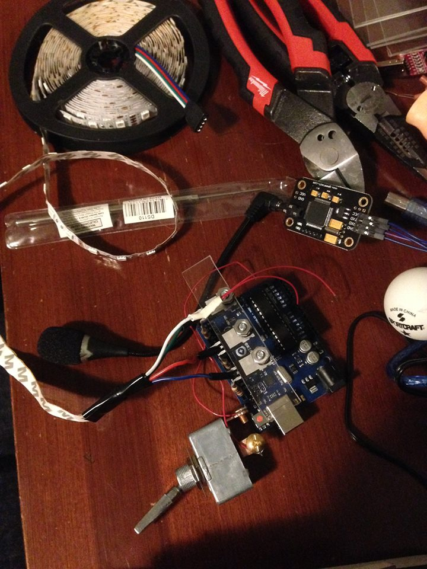
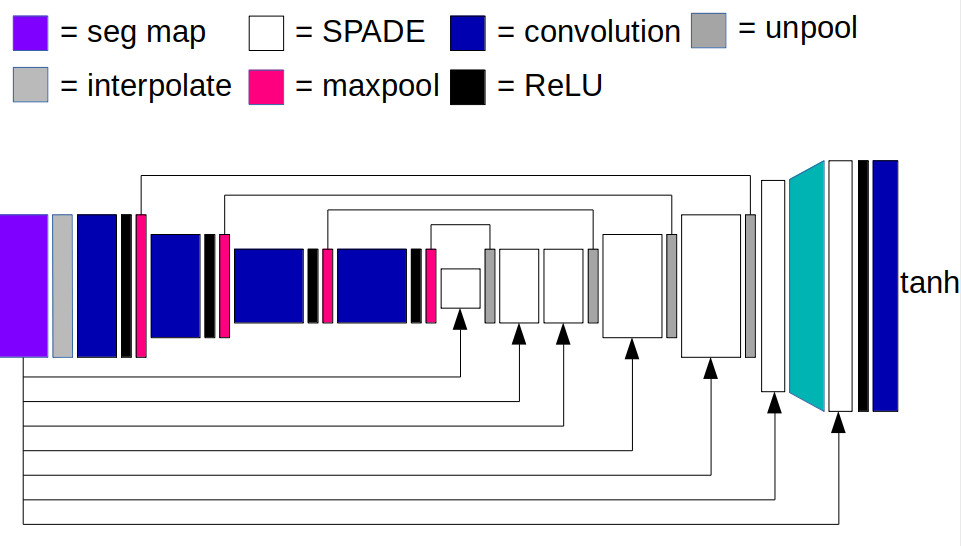
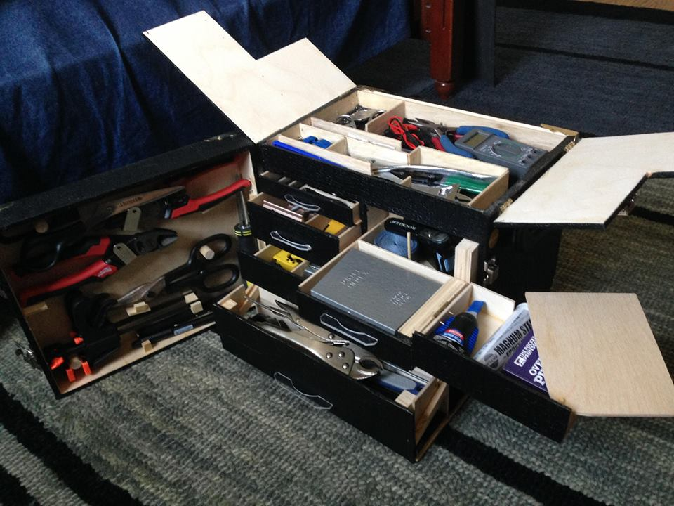
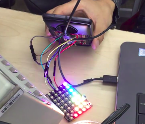
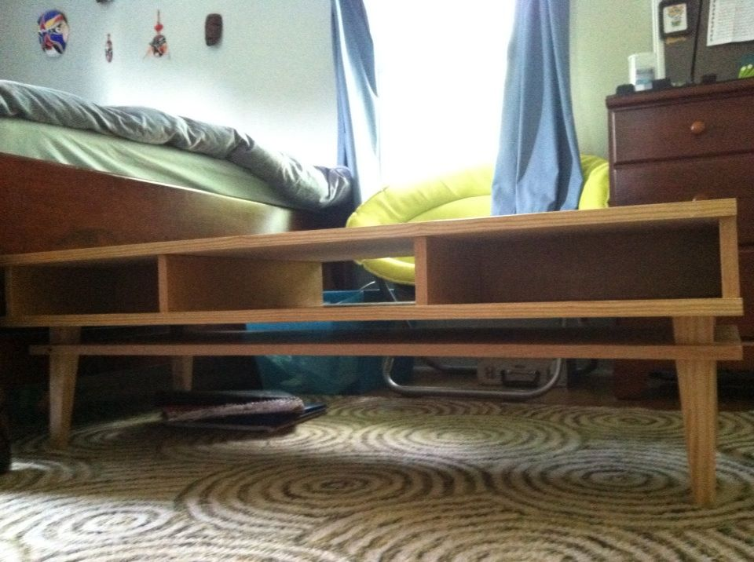

This was my first foray into programming, beginning mid-junior year of high school. I currently cannot find
the Arduino code (I know, an Arduino mini would have been much better space-wise, but I was a complete beginner
and everyone online said to start with the Arduino Uno. Here is
a video.



The summer before college, I wanted to do another programming project. This is V.L.A.D., Voice-Lighting
Automated Dorm. Here is
a video.

Spring Quarter of 2019, I took CS231n: Convolutional Neural Networks for Image Recognition. For my final
project, I teamed up with my friend Krishna G. and tried to make some improvements to SPADE, a model for
generating photorealistic images given a semantic segmentation map of an image. Here is
our final report. Our results are seen below.

I am very excited by interesting chests and cases, so I made one for some tools. The drawers were done
by dados on the sides, with the drawer slide having
tiny
rabbets on the end to fit into the dados.


In early 2017, my friend Tanay K. took me to a hardware hackathon where we were to create a Moto Mod for the
Moto Z android phone. We decided to join forces with David L. and Michael H. to work on Yan M.H.'s idea, an LED
board to assist with the camera flash. Tanay implemented the music recognizer via F.F.T. in about half an hour (!),
so that became a feature. David and Michael works on an app for the phone with which one could display images
or gifs on the LED board. Here is a
video.
I'm a huge sucker for Halloween. My tributes to Nosferatu (1922) and The Dark Knight (2008).
I don't have any clear images for this one. It was a long time ago.
When I was in 7th grade, my good friend Big Gerb blew my mind with a mechanical rubber band machine
gun from OGG Craft, so I wanted to make my own.
Here is a video.

All of this stuff is pre-junior year of high school, and I have it all in a video
here. It consists of: a
polynesian lime spatula,
spartan helmet, nerf ballistic knife, tiki carvings, taxi driver rubber band
sleeve pistol, spring loaded wolverine claws, Scarecrow costume (mask and wrist sprayer) from Batman Begins
(2005), retro coffee table seen above courtesy of Woodworking for Mere Mortals, sheet music organizer,
Mythbusters 'Plausible' sign, chinese repearting crossbow, and homemade signal flares.